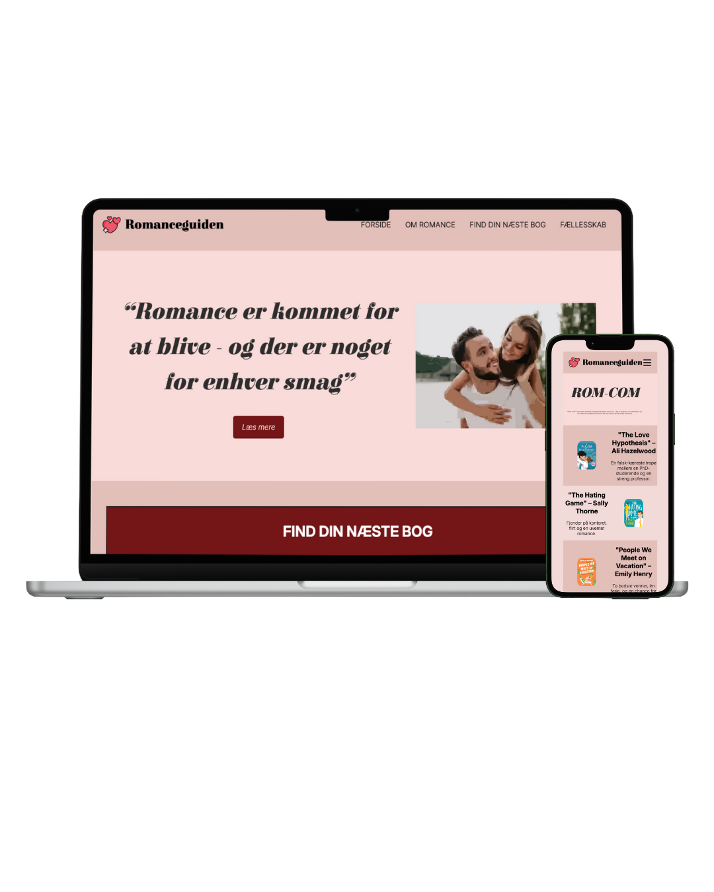

TEMA 3 - GRUNDLÆGGENDE UI/UX
I tema 3 arbejdede vi med UI/UX-metoder, herunder research, produktudvikling, test samt præsentation af proces og endelig løsning.
Opgaven gik ud på at vælge et selvvalgt emne og udvikle et website ud fra dette. Projektet var opdelt i fem faser med fokus på:
EMNESITE
Jeg valgte at lave et site, der fungerer som en guide til at finde sin næste romancebog. Emnet valgte jeg, fordi jeg selv har en stor passion for bøger, særligt romancegenren.

Jeg startede med at definere formålet med sitet, målgruppen, brugertyper og indhold. Herefter udarbejdede jeg en survey for at få indsigt i, hvor folk finder inspiration til bøger. På baggrund af dette lavede jeg en digital prototype i Figma, både til website og mobilsite.
Se figma herUd fra min prototype kodede jeg sitet i HTML og CSS. Sitet består af en forside, hvor brugeren kan læse om genren og få et overblik over de forskellige undergenrer inden for romance. Derudover indeholder sitet undersider til de enkelte genrer (feel-good, dark romance, historical og rom-com), hvor brugeren præsenteres for en top 5-liste samt beskrivelser af de enkelte bøger.
Projektet blev afsluttet med en præsentation for en underviser og en gruppe medstuderende.
Se website her